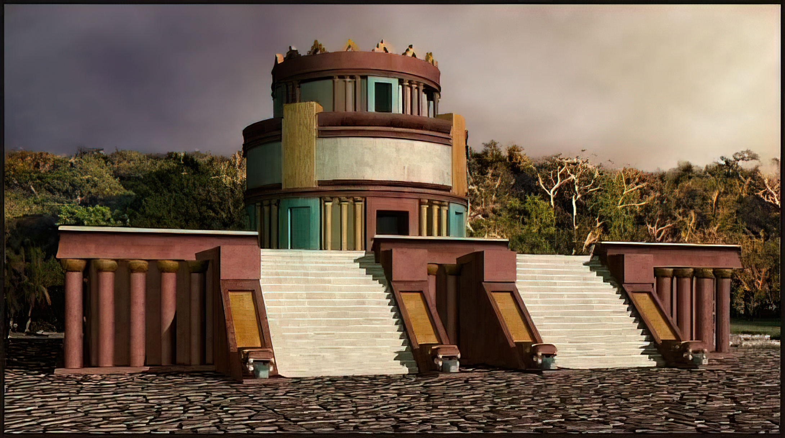

Observatorul El Caracol din Chichen Itza
Reconstrucție 3D al observatorului El Caracol
Se crede că structura ciudată a fost construită în jurul anului 906 d.Hr.
Studiile structurii sugerează că El Caracol - care înseamnă melc - a fost construit de vechii mayași pentru a-i ajuta să studieze și să țină evidența stelelor. El Caracol - al cărui nume provine de la scara interioară în spirală din interiorul turnului - este de fapt o combinație de trei clădiri suprapuse.
El Caracol a fost proiectat special de mayași ca o clădire care să le permită să vadă ce era deasupra orizontului. Acest lucru a fost imperativ pentru aspirațiile lor astronomice, deoarece întreaga Peninsula Yucatan este plată ca un disc. Aceasta înseamnă că vechii astronomi au trebuit să facă ceva care să le permită să vadă deasupra copacului dens al pădurii tropicale. Clădirea permite o vedere clară asupra cerului nopții și a peisajului din jur. El Caracol se ridică impunător deasupra copacilor, oferind o vedere fără precedent asupra cerului.
El Caracol le-a permis astronomilor Maya să studieze cerul nocturn, dar se crede că structura a fost concepută special pentru a studia planeta Venus. Dar El Caracol era mai mult decât o clădire ciudată Maya. Acest proto-observator a permis astronomilor antici să calculeze cu mare precizie eclipsele de soare și de lună. De asemenea, le-a permis să studieze stelele și planetele și, mai important, să calculeze anul solar cu mare precizie.
MEF analiza rezistenței căruciorului de lemn (din mecanismul fațadei mobile)